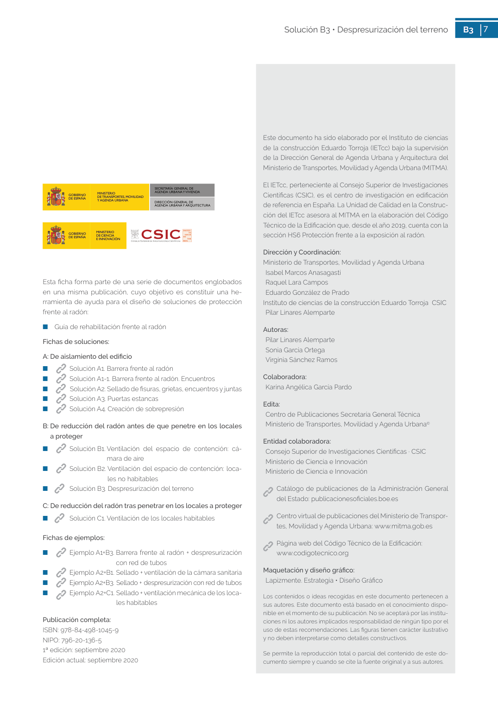

<!doctype html>
<html lang="es"><head><meta charset="utf-8">
<meta name="viewport" content="width=device-width, initial-scale=1">
<title>GUIA · Página física 7</title><link rel="stylesheet" href="../estilo.css">
</head><body>
<nav><a href="../index.html">Índice</a> › <a href="../doc/guia-pdf-6eb52848c327-sin-fecha-24c6293dc482.html">GUIA</a></nav>

<h1>GUIA · Página física 7</h1>
<header class="meta"><p><strong>Solucion B3 Despresurizacion del terreno</strong> · edición sin-fecha · capa guia</p>
<p>Documento <code>GUIA-PDF-6eb52848c327</code> · SHA-256 del PDF <code>24c6293dc482c2adb9bba4f905f4818894e01c636ea0bd08bcfa4ad7875f8e4e</code></p>
<p>Página física 7 de 7.</p>
<p><a href="../../contenido/docs/GUIA-PDF-6eb52848c327/sin-fecha__24c6293dc482/fuente.pdf#page=7">Copia fiel del PDF fuente</a> · <a href="https://www.codigotecnico.org/pdf/GuiasyOtros/GuiaRadon/Solucion_B3_Despresurizacion_del_terreno.pdf">Fuente oficial</a></p>
<p><a href="https://www.codigotecnico.org/Guias/GuiaRadon.html">Ficha de la disposición en la fuente oficial</a></p>
<div class="cita"><p><a href="../../contenido/docs/GUIA-PDF-6eb52848c327/sin-fecha__24c6293dc482/fuente.pdf#page=7">Créditos y autoría en el PDF fuente</a>. Reproducción con cita de fuente y autores.</p>
<p>Permiso literal: Se permite la reproducción total o parcial del contenido de este do­ Edición actual: septiembre 2020 cumento siempre y cuando se cite la fuente original y a sus autores.</p>
<details><summary>Leer los créditos completos y la autoría</summary><pre class="literal">                                                          Solución B3 • Despresurización del terreno   B3  77


                                                                     Este documento ha sido elaborado por el Instituto de ciencias
                                                         de la construcción Eduardo Torroja (IETcc) bajo la supervisión
                                                         de la Dirección General de Agenda Urbana y Arquitectura del
                                                                             Ministerio de Transportes, Movilidad y Agenda Urbana (MITMA).

                                                             SECRETARÍA GENERAL DE                         El IETcc, perteneciente al Consejo Superior de Investigaciones
                                                  AGENDA URBANA                                                                     Y VIVIENDA                              MINISTERIO            GOBIERNO                                                                                 Científicas (CSIC), es el centro de investigación en edificación                          DE                               TRANSPORTES,                                          MOVILIDAD
            DE ESPAÑA      Y                         AGENDA                                URBANA                                                        DIRECCIÓN                                                                GENERAL                                                                      DE
                                                  AGENDA URBANA Y ARQUITECTURA              de referencia en España. La Unidad de Calidad en la Construc­
                                                                       ción del IETcc asesora al MITMA en la elaboración del Código
                                                                   Técnico de la Edificación que, desde el año 2019, cuenta con la
                              MINISTERIO            GOBIERNO                         DE                               CIENCIA                                             sección HS6 Protección frente a la exposición al radón.            DE ESPAÑA                                E INNOVACIÓN

                                                                    Dirección y Coordinación:
                                                                            Ministerio de Transportes, Movilidad y Agenda Urbana
                                                                           Isabel Marcos Anasagasti
Esta ficha forma parte de una serie de documentos englobados       Raquel Lara Campos
en una misma publicación, cuyo objetivo es constituir una he­       Eduardo González de Prado
rramienta de ayuda para el diseño de soluciones de protección        Instituto de ciencias de la construcción Eduardo Torroja CSIC
frente al radón:                                                                    Pilar Linares Alemparte

■  Guía de rehabilitación frente al radón                                                                      Autoras:
Fichas de soluciones:                                                            Pilar Linares Alemparte
                                                                   Sonia García Ortega
A: De aislamiento del edificio                                                                                 Virginia Sánchez Ramos
■       Solución A1. Barrera frente al radón
■       Solución A1-1. Barrera frente al radón. Encuentros              Colaboradora:
■       Solución A2. Sellado de fisuras, grietas, encuentros y juntas        Karina Angélica García Pardo
■       Solución A3. Puertas estancas
                                                                               Edita:
■       Solución A4. Creación de sobrepresión
                                                                  Centro de Publicaciones Secretaría General Técnica
B: De reducción del radón antes de que penetre en los locales        Ministerio de Transportes, Movilidad y Agenda Urbana©
  a proteger
                                                                  Entidad colaboradora:
■       Solución B1. Ventilación del espacio de contención: cá­                                                                Consejo Superior de Investigaciones Científicas · CSIC
                 mara de aire                                                                             Ministerio de Ciencia e Innovación
■       Solución B2. Ventilación del espacio de contención: loca­                                                                             Ministerio de Ciencia e Innovación
                      les no habitables
■       Solución B3. Despresurización del terreno                        Catálogo de publicaciones de la Administración General
                                                                         del Estado: publicacionesoficiales.boe.es
C: De reducción del radón tras penetrar en los locales a proteger
■       Solución C1. Ventilación de los locales habitables                  Centro virtual de publicaciones del Ministerio de Transpor­
                                                                                         tes, Movilidad y Agenda Urbana: www.mitma.gob.es

Fichas de ejemplos:
                                                                     Página web del Código Técnico de la Edificación:
■      Ejemplo A1+B3. Barrera frente al radón + despresurización          www.codigotecnico.org
                    con red de tubos
■      Ejemplo A2+B1. Sellado + ventilación de la cámara sanitaria      Maquetación y diseño gráfico:
■      Ejemplo A2+B3. Sellado + despresurización con red de tubos       Lapizmente. Estrategia • Diseño Gráfico
■      Ejemplo A2+C1. Sellado + ventilación mecánica de los loca-                                                                     Los contenidos o ideas recogidas en este documento pertenecen a
                          les habitables                                   sus autores. Este documento está basado en el conocimiento dispo­
                                                                                    nible en el momento de su publicación. No se aceptará por las institu­
Publicación completa:                                                    ciones ni los autores implicados responsabilidad de ningún tipo por el
ISBN: 978-84-498-1045-9                                             uso de estas recomendaciones. Las figuras tienen carácter ilustrativo
NIPO: 796-20-136-5                                                   y no deben interpretarse como detalles constructivos.
1ª edición: septiembre 2020                                                               Se permite la reproducción total o parcial del contenido de este do­
Edición actual: septiembre 2020                                    cumento siempre y cuando se cite la fuente original y a sus autores.</pre></details></div>
<div class="aviso"><strong>Alcance y límites</strong><ul><li>Extracción automática sin revisión técnica humana completa. Contraste tablas, fórmulas, notas y excepciones con el PDF. La edición disponible no determina la vigencia ni la aplicabilidad a un proyecto.</li><li>Guia o documento divulgativo; no es texto normativo.</li><li>Extracción automática; el cotejo humano está pendiente.</li><li>Semántica y tablas no equivalen a validación exhaustiva.</li></ul></div></header>
<nav><a href="guia-pdf-6eb52848c327-sin-fecha-24c6293dc482__p0006.html">← Página 6</a></nav>
<p>Formato: <a href="../../contenido/docs/GUIA-PDF-6eb52848c327/sin-fecha__24c6293dc482/pagina/p0007.md">Texto de la página (Markdown)</a></p>
<p><a href="../../contenido/docs/GUIA-PDF-6eb52848c327/sin-fecha__24c6293dc482/bloque/p0007.json">JSON de bloques</a></p>
<pre class="literal">7
Solución B3 • Despresurización del terreno
B3
7
Este documento ha sido elaborado por el Instituto de ciencias 
de la construcción Eduardo Torroja (IETcc) bajo la supervisión 
de la Dirección General de Agenda Urbana y Arquitectura del 
Ministerio de Transportes, Movilidad y Agenda Urbana (MITMA).
El IETcc, perteneciente al Consejo Superior de Investigaciones 
Científicas (CSIC), es el centro de investigación en edificación 
de referencia en España. La Unidad de Calidad en la Construc­
ción del IETcc asesora al MITMA en la elaboración del Código 
Técnico de la Edificación que, desde el año 2019, cuenta con la 
sección HS6 Protección frente a la exposición al radón.
Dirección y Coordinación:
Ministerio de Transportes, Movilidad y Agenda Urbana
Isabel Marcos Anasagasti
Raquel Lara Campos
Eduardo González de Prado
Instituto de ciencias de la construcción Eduardo Torroja  CSIC
Pilar Linares Alemparte
Autoras:
Pilar Linares Alemparte
Sonia García Ortega
Virginia Sánchez Ramos
Colaboradora:
Karina Angélica García Pardo
Edita:
Centro de Publicaciones Secretaría General Técnica
Ministerio de Transportes, Movilidad y Agenda Urbana©
Entidad colaboradora:
Consejo Superior de Investigaciones Científicas · CSIC
Ministerio de Ciencia e Innovación
Ministerio de Ciencia e Innovación
  
Catálogo de publicaciones de la Administración General 
del Estado: publicacionesoficiales.boe.es 
  Centro virtual de publicaciones del Ministerio de Transpor­
tes, Movilidad y Agenda Urbana: www.mitma.gob.es
  Página web del Código Técnico de la Edificación:
www.codigotecnico.org
Maquetación y diseño gráfico:
Lapizmente. Estrategia • Diseño Gráfico
Los contenidos o ideas recogidas en este documento pertenecen a 
sus autores. Este documento está basado en el conocimiento dispo­
nible en el momento de su publicación. No se aceptará por las institu­
ciones ni los autores implicados responsabilidad de ningún tipo por el 
uso de estas recomendaciones. Las figuras tienen carácter ilustrativo 
y no deben interpretarse como detalles constructivos.
Se permite la reproducción total o parcial del contenido de este do­
cumento siempre y cuando se cite la fuente original y a sus autores.
Esta ficha forma parte de una serie de documentos englobados 
en una misma publicación, cuyo objetivo es constituir una he­
rramienta de ayuda para el diseño de soluciones de protección 
frente al radón:
	
■
Guía de rehabilitación frente al radón
Fichas de soluciones:
A: De aislamiento del edificio 
	
■
 
  Solución A1. Barrera frente al radón
	
■
 
  Solución A1-1. Barrera frente al radón. Encuentros
	
■
 
   Solución A2. Sellado de fisuras, grietas, encuentros y juntas 
	
■
 
  Solución A3. Puertas estancas
	
■
 
  Solución A4. Creación de sobrepresión
B: De reducción del radón antes de que penetre en los locales 
a proteger 
	
■
 
  Solución B1. Ventilación del espacio de contención: cá­
mara de aire
	
■
 
  Solución B2. Ventilación del espacio de contención: loca­
les no habitables
	
■
   Solución B3. Despresurización del terreno
C: De reducción del radón tras penetrar en los locales a proteger 
	
■
   Solución C1. Ventilación de los locales habitables
Fichas de ejemplos:
	
■
 
  Ejemplo A1+B3. Barrera frente al radón + despresurización 
con red de tubos
	
■
 
  Ejemplo A2+B1. Sellado + ventilación de la cámara sanitaria
	
■
 
  Ejemplo A2+B3.  Sellado + despresurización con red de tubos
	
■
 
  Ejemplo A2+C1. Sellado + ventilación mecánica de los loca-
les habitables
Publicación completa:
ISBN: 978-84-498-1045-9
NIPO: 796-20-136-5
1ª edición: septiembre 2020
Edición actual: septiembre 2020
SECRETARÍA GENERAL DE
AGENDA URBANA Y VIVIENDA
DIRECCIÓN GENERAL DE
AGENDA URBANA Y ARQUITECTURA
GOBIERNO
DE ESPAÑA
MINISTERIO
DE TRANSPORTES, MOVILIDAD
Y AGENDA URBANA
GOBIERNO
DE ESPAÑA
MINISTERIO
DE CIENCIA
E INNOVACIÓN
</pre>
<figure><a href="../../contenido/docs/GUIA-PDF-6eb52848c327/sin-fecha__24c6293dc482/figura/p0007.png"></a><figcaption>Página visual 7, para contrastar fórmulas, tablas y figuras.</figcaption></figure><h2>Tablas extraídas</h2><p>Datos candidatos: compruebe celdas y notas en el PDF.</p><ul><li><a href="../../contenido/docs/GUIA-PDF-6eb52848c327/sin-fecha__24c6293dc482/tabla/p0007_t01.json">p0007_t01.json</a></li></ul>
<h2>Segmentos que incluyen esta página</h2><ul>
<li><a href="../apartado/guia-pdf-6eb52848c327-sin-fecha-24c6293dc482__a0023.html">a0023 · 3   hueco de comunicación / OBSERVACIONES Necesidad de un técnico especialista</a></li>
<li><a href="../apartado/guia-pdf-6eb52848c327-sin-fecha-24c6293dc482__a0024.html">a0024 · 3   hueco de comunicación / sección HS6 Protección frente a la exposición al radón.</a></li>
</ul>
<footer>Generado estáticamente desde el corpus normalizado; sin JavaScript ni servicios externos. El HTML es una vista reproducible; conserve la fuente y la edición al citar.</footer>
</body></html>
